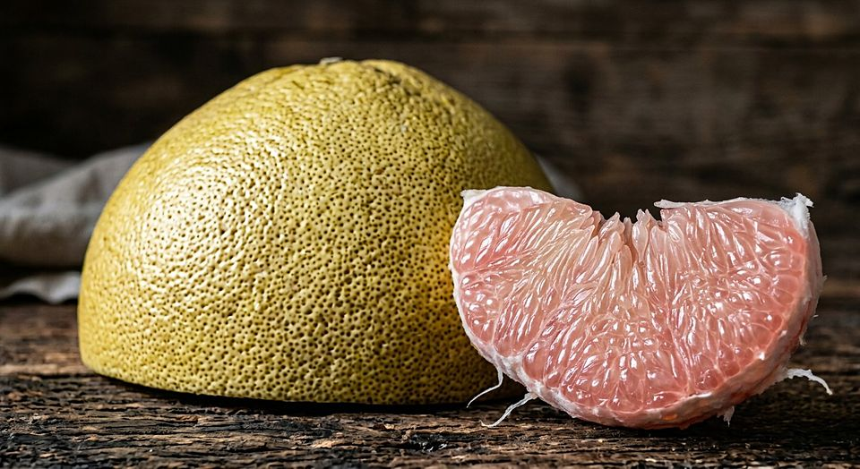

La peau amortissante du pomélo
Un pomélo tombe d’un arbre sur un sol dur.
Ce que cela ne dit pas Aucun pourcentage d’absorption n’est publié ici : les valeurs dépendent de l’état d’hydratation, de la vitesse d’impact et de la variété du fruit.
Source primaire Thielen, M., Schmitt, C. N. Z., Eckert, S., Speck, T. & Seidel, R. (2013). Bioinspir. Biomim. 8: 025001 · doi:10.1088/1748-3182/8/2/025001
0 2013
Salle(s) liée(s) : salle 12